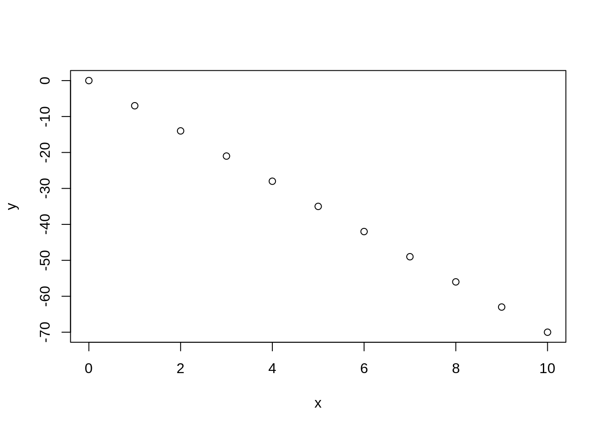

Lecture 11
Discrete Random Variables and Their Probability Distributions
Section 5.1 Discrete Random Variables and Their Probability Distributions
Random Variables
For example, suppose you toss a die and measure x the number observed on the upper face. The variable x can take on any of six values - 1,2,3,4,5,6.
x is a random variable if the value that it assumes, corresponding to the outcome an experiment, is a chance or random event.
what are some examples of random variables?
This chapter focuses on discrete random variables.
Probability Distribution
- relative frequency distribution (sample)
- probability distribution is the relative frequency distribution constructed for the entire population of measurements.
- p(x) is the probability associated with value x
Requirements for a discrete probability distribution
\(0 \le p(x) \le 1\)
\(\sum p(x) = 1\)
Example 5.1
Toss two fair coins and let x equal the number of heads observed. Find the probability distribution for x.
table with x, number of heads, simple events and p(x)
draw histogram with this information
The Mean and Standard Deviation for a Discrete Random Variable
Population mean or expected value.
Suppose you the experiment is repeated a large number of times - say 4,000,000. How can we calculate the average?
Definition:
\[ \mu = E(x) = \sum x p(x) \]
Repeat previous example but with 3 coin flips
You can also do the same thing for the population variance
\[ \sum(x - \mu)^2p(x) \]
In both cases you sum over all possible values of x
Example 5.2
A big box store is selling laptops, they only have 4 in stock. Previously, the marketing department had defined a probability distribution for the number of laptops bought as below. What is the expected number of laptops bought and the variance. How likely is it the 5 will be bought?
| x | \(p(x)\) | \(xp(x)\) | \((x - \mu)^2\) | \((x - \mu)^2 p(x)\) |
|---|---|---|---|---|
| 0 | .1 | |||
| 1 | .4 | |||
| 2 | .2 | |||
| 3 | .15 | |||
| 4 | .1 | |||
| 5 | .05 | |||
| Totals |
Example 5.3
A lottery is conducted for a local charity, 8000 tickets are to be sold at $10 each. The prize it a $24,000 car. If you purchase two tickets, what is your expected gain?
What are the two possible gains? What is the probability of each?
What is the expected loss/gain?
Example 5.4
An insurance company needs to know how much to charge for a $100,000 policy insuring an event against cancellation due to inclement weather. The probability of inclement weather during the time of the event is assessed as 2 in 100. Once they find C, the cost of the policy to break event, they can add administrative costs and profit to this amount. Fin the value of C so that their expected gain is 0.
x = Gain, C = premium.
What are the two possibilities? What is the gain in each situation? What is the probability of each happening?
- What has been an implicit assumption throughout (most) of these examples? is 2/100 for example, always true?
Homework
[1] "5.1.12-16, 5.1.29, 5.1.34"Answers: Section 5.1